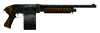
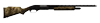
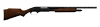
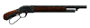
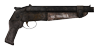

На главную Оружие Об игре Купить в Steam
На главную Оружие Об игре Купить в Steam
| Место в топе | Фото | Название | Урон | Урон в секунду | Боеприпасы | Обойма | Стоймость | Требования к навыкам |
| 1 |  | Полицейский дробовик | 67 | 268 | Патрон 12 кал. | 12 | 5500 | Оружие:0, Сила:7 |
| 2 |  | "Обеденный колокол" | 75 | 124 | Патрон 12 кал. | 5 | 4800 | Оружие:0, Сила:5 |
| 3 |  | Охотничий дробовик | 70 | 109 | Патрон 12 кал. | 5 | 3800 | Оружие:0, Сила:5 |
| 4 |  | Дробовик с рычажной перезарядкой | 48 | 91 | Патрон 20 кал. | 2 | 2000 | Оружие:0, Сила:4 |
| 5 |  | "Большой бум" | 120 | 61 | Патрон 12 кал. | 2 | 625 | Оружие:50, Сила:4 |
| Оружие | Местонахождение |
| Полицейский дробовик | Убежище 34 — в оружейной. «Оружейники» — можно купить у Торготрона по достижении 16 уровня. Охранник кассовой комнаты «Гоморры» вооружён им. Рыцарь Торрес (Хидден-Вэли) иногда продаёт его. Председатель в «Топс», охраняющий банк, вооружён им. Во время финальной стадии квеста «Два сапога пара», несколько легионеров будут вооружены им. Некоторые рейнджеры-ветераны НКР вооружены им. Этим оружием вооружены некоторые из меченых. Этим оружием вооружены некоторые из Белоногих. |
| "Обеденный колокол" | «Обеденный колокол» можно получить в качестве награды за квест «Бери всё». |
| Охотничий дробовик | «Оружейники» — Торготрон продаёт такие дробовики (в идеальном состоянии, как и остальное оружие). Пещера Бладборн — рядом со скелетом, покоящимся у лагерного костра. Пещера Бутджек — у мёртвого старателя. Пещера Чарльстон — за запертой дверью в («Взлом» 75). Пивоварня — может находиться в запертом оружейном шкафу, расположенном в подвале («Взлом» 75). Старый ядерный полигон — в хижине, рядом со столом. Тайная квартира Последователей — на кровати. Для доступа в квартиру требуется ключ от тайной квартиры Последователей. Ферма Хоровица — в кузове грузовика, припаркованного рядом с амбаром. Некоторые бойцы племени Великих ханов могут быть вооружены этими дробовиками. По ходу игры в информационном центре дамбы Гувера появляется дополнительный караул — два солдата в восстановленной броне. У одного из них с собой именно это оружие. Некоторые центурионы Легиона Цезаря могут быть вооружены им во время Второй битвы за дамбу Гувера Зайонский дом рыбака — за барной стойкой. Некоторые рейнджеры НКР (например, преследующий Курьера отряд рейнджеров при его плохой репутации). |
| Дробовик с рычажной перезарядкой | Боулдер-Сити — в подсобке салуна «Толстый Рог». «Оружейники» — можно приобрести у Торготрона. Казино «Атомный ковбой» — за барной стойкой, на одной из полок. Ломбард Мигеля — лежит на витрине. Вооружены Великие ханы во Второй битве за Дамбу Гувера. Иногда им вооружены Черти и стрелки банды Гадюк. Также таким дробовиком вооружены Мик, охранники казино «Атомный ковбой», Последователи-охранники и охранники «Красного каравана» (в самой компании и на месте разграбленного каравана Данна). Магистраль 95 — иногда бродячий торговец-женщина продаёт в плохом состоянии. Люксы — в оружейной службы безопасности, за дверью, открываемой терминалом. Может быть найден за Цехом по демонтажу секьюритронов |
| "Большой бум" | «Большой бум» принадлежит Мамаше Гибсон, обитающей на собственной свалке. Получить его можно, убив мамашу Гибсон, обокрав её, или выбив оружие из ее рук выстрелом |